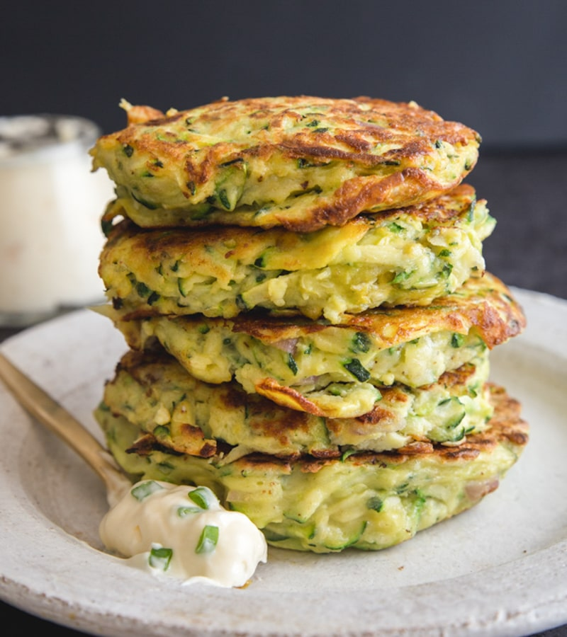

Zucchini Patties

Description
These cheesy zucchini patties are an excellent way to use up that abundance of
zucchini from the garden. Serve with a bit of tomato sauce or sour cream dabbed on top.
Ingredients
- 2 cups grated zucchini
- 2 eggs, beaten
- 1 cup all-purpose flour
- 1 cup grated parmesan cheese
- 1 cup shredded mozzarella cheese
- 1 cup chopped onion
- salt to taste
- 2 tablespoons vegetable oil
Steps
- Combine zucchini, eggs, flour, Parmesan cheese, mozzarella cheese, onion, and
salt in a medium bowl. Stir well enough to distribute ingredients evenly.
- Heat oil in a skillet over medium-high heat.
- Working in batches, scoop tablespoonfuls of zucchini mixture into hot oil and fry
until golden brown, about 2 minutes per side.